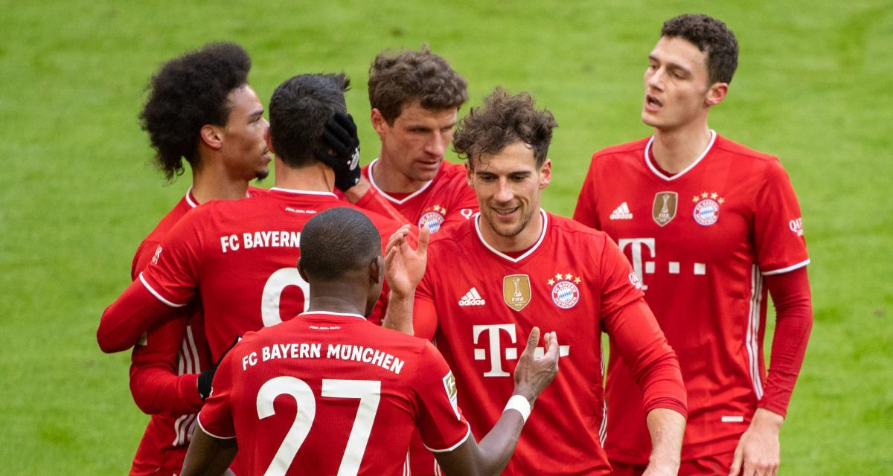
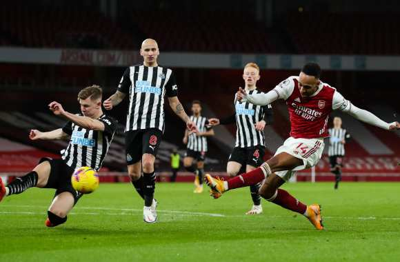
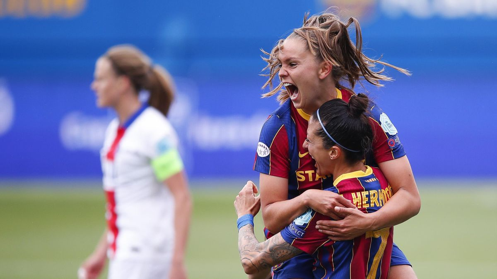

PSG - LILLE : LOSC's big operation
Lille's 10th goal of the season came from David, who was set up by Ikoné, and they won the game in Paris.
It's the first time that a player has been sent off since his last start. Paris-SG are losing their grip on Ligue 1.
It was a big blow before the trip to Munich on Wednesday in the UEFA Champions League.
Barcelona-Valladolid
BARÇA - VALLADOLID : Barcelone arrache la victoire grâce à Dembélé
À cinq jours du Clasico, le Barça s'impose face à Valladolid dans les dernières minutes de jeu grâce à Dembélé.
Le Français, seul animateur de l'attaque catalane ce soir, permet aux siens de revenir à un point du leader, l'Atlético Madrid.
Valladolid est à trois points de la zone de relégation.

RB Leipzig-Bayern
LEIPZIG - BAYERN : Bayern stuck in Leipzig!
Bayern were dominant in the game, but were unable to make the difference today, despite several attempts from Gnabry and a goal disallowed
to Goretzka for offside. The Bavarians, who were beaten by a strong Saxon team, are now only 2 points ahead of Dortmund.

Newcastle - Arsenal
The Arsenal Gunners won 0-2 at Newcastle after a well-controlled match. Elneny had opened the scoring at the very beginning of the match (5th) before Aubameyang put Arteta's players on the back foot (66th). It's a great way to get back into the game," he said, "and it's a great way to get back into the game and get back into the game. Newcastle remain 17th, nine points off the bottom of the table.
Real Madrid - Osasuna
The Merengues now have 74 points and are two points behind neighbours Atletico. They are also putting pressure on Barcelona and Sevilla, who play on Sunday and Monday. Osasuna remain 11th with 40 points. Varane, who came off at half-time, has a right thigh injury and will undergo tests tomorrow.

PSG - Barcelona
PSG is eliminated from the Champions League! Beaten by a Barcelona team superior in the game, the Parisians will not play a third European final. The feat achieved against Lyon in the previous round remains unfulfilled for Echouafni's players.